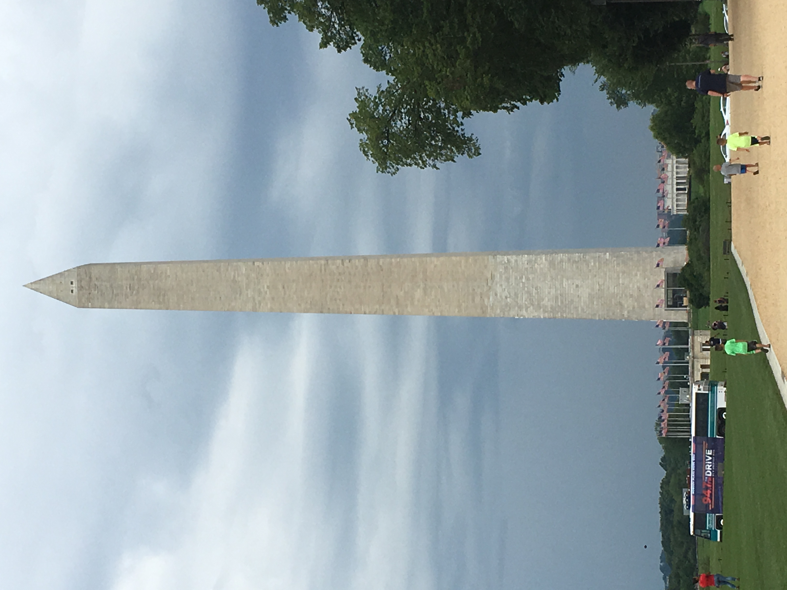
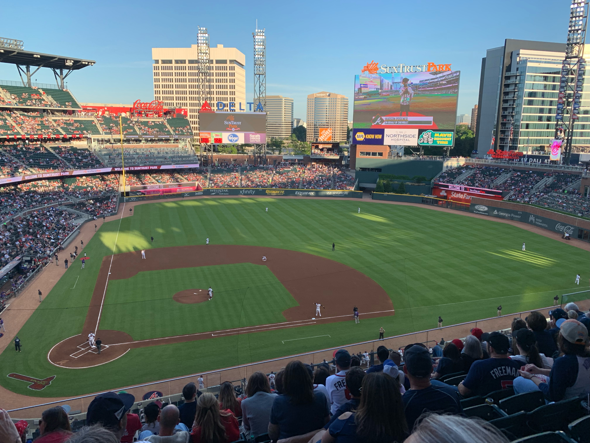

Places I've been:
Washington DC
When I went to DC, I visited multiple museums including the Smithsonian National museum of Natural History, The Smithsoian National Air and Space Museum. I went on the steps of the Supreme Court. I went to the National Mall and walked around and saw the Washington Monument. I also went to the Smithsonian National Musuem of National museum of American History. I also went to the tomb of the unknown soldier at the Arlington National Cemetary. and walked past the United States Capitial Building. We saw the White House as we walked next to the fences where we saw a bunch of Secret Service Agents.
Kiawah Island, South Carolina
 When I went to Kiawah Island, I went with my family and grandparents. When I was there I went to the beach and enjoyed playing in the sand rather than me going into the water. Then I'd go to the town thats a couple minutes from my beach house, where we walked around and it cool. it started raining pretty heavily and when I got back, it looked like the front yard got flooded, since I was at the beach the water doesn't drain easily. Then another place I visited was Charleston, South Carolina. Where I visited an aircraft carrier and explored.
When I went to Kiawah Island, I went with my family and grandparents. When I was there I went to the beach and enjoyed playing in the sand rather than me going into the water. Then I'd go to the town thats a couple minutes from my beach house, where we walked around and it cool. it started raining pretty heavily and when I got back, it looked like the front yard got flooded, since I was at the beach the water doesn't drain easily. Then another place I visited was Charleston, South Carolina. Where I visited an aircraft carrier and explored.
Atlanta, Georgia
When I went to Atlanta, I went with my family. When I was there I went to the New Atlanta Braves Stadium Truist Park. My family are big braves fans so we always try to go to a Braves game once or twice a year. After the Braves game, we went back to our hotel for the night as we still had one day left in atlanta. Where we went to the Georgia Aqarium, which was the largest aqarium in the world from 2005 to 2012. Where we saw lots of fish and explored. After all of that we got in the car to head back home.